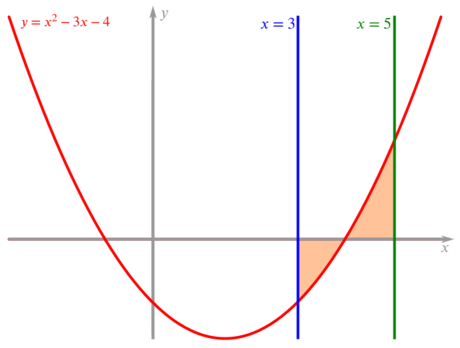

We have four integrals to look at, but only two of them contain just one of the letters—(1) and (3).
We could start with the first integral,
(1)∫5a10x+3dx=114.
We can see that the value the integral takes is positive, so we have an area formed between 10x+3 and the x-axis.
This can only happen when 0<a<5, since a is also positive. We now have a good feeling for the sort of value for a we are looking for.
If we perform the integration we get the following,
(1)∫5a10x+3dx=[5x2+3x]5a=(5×52+3×5)−(5a2+3a)=114.
Simplifying the above we find that,
140−5a2−3a⟹5a2+3a−26=114=0
The prime factor decomposition of 26 is 2×13. Trying the possible combinations leads us to (5x+13)(x−2). Given that a is positive, we must have a=2.
Is this sensible?
Well, we thought above that 0<a<5 and we have found a value that fits with this.
Which integral could we tackle next?
(2)∫92abx⎯⎯√+ax⎯⎯√dx=42
For this integral it is a good idea to rewrite the integrand and we can also fill in the value for a.
∫92abx⎯⎯√+ax⎯⎯√dx=∫94bx12+2x−12dx.
Why is it helpful that 9 and 4 are the numbers we require to substitute in?
Performing the integration and solving a linear equation in b, we find that b=3.
(3)∫1121x5−1x2dx=c+14
This integral does not depend on any of the unknowns. It is again useful to rewrite the integrand.
∫1121x5−1x2dx=∫112x−5−x−2dx.
Performing the integration and solving a linear equation in c, we find that c=10.
(4)∫c+26xba(x⎯⎯√−1x⎯⎯√)dx=abada
This equation contains all four of the unknowns so is best kept til last. As before, we start by rewriting the integrand and substituting in the values for a, b and c.
We can also substitute our values for a, b and c into the right hand side of the original equation to give abada=2×32×d2.
∫126x2−xdx=18d2.
Performing the integration and solving a quadratic equation in d, we find that d=5.
The area formed between the x-axis and the lines x=b and x=d, and the curve y=(x−2a)(x+1) is cda(a+b).
To check that we have found the correct values for a, b, c and d we can evaluate the integral between the given x values,
∫db(x−2a)(x+1)dx=∫53(x−4)(x+1)dx
and check it is equal to cda(a+b)=5.
But we are not told about the integral, we are told that the area formed between the curve and the x-axis is 5. This means we need to be careful if our curve crosses the x-axis.
Sketching the curve y=(x−4)(x+1)=x2−3x−4 reveals that the curve crosses the x-axis at x=4. So we must separately calculate the areas between the x values 3 and 4, and 4 and 5.

The curve y=(x−4)(x+1)
We can thus split our integral up into two
∫43x2−3x−4dx,
which will give the negative value −136 and
∫54x2−3x−4dx,
which will give the positive value 176.
Therefore, the total area formed between the curve, the lines x=3 and x=5, and the x-axis is 136+176=5.